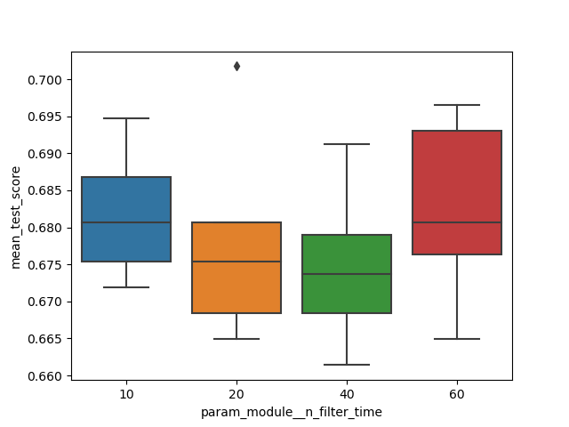
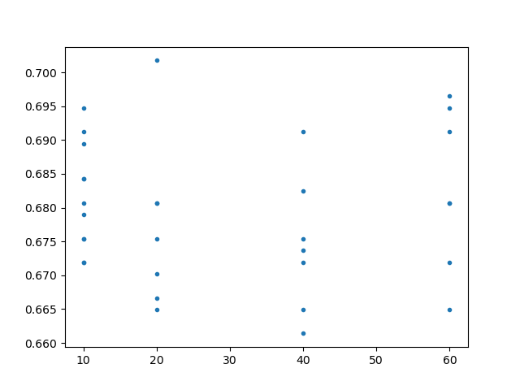
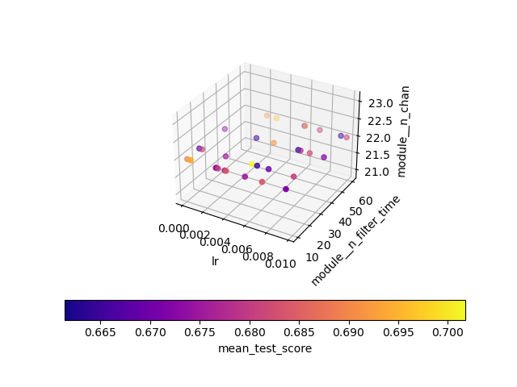

Hyper-parameter Search of DL-BCI model¶
This is an example of parameter search on MOABB datasets.
import necessary packages:
from Offline.datasets.moabb import MOABBDataset,moabb_dataset_list
from Offline.profile.manifest import BugZero
from Offline.processing.preprocess import Preprocessor,exponential_moving_standardize
from Paradigm.base import ModuleAdjustParadigm
from Offline.trainning.Factory import SkorchFactory,SkorchRandSearch,SkorchGridSearch
create dataset:
datasets = {
1:MOABBDataset(dataset_name=moabb_dataset_list[1][0],subject_ids=[1])
}
define preprocessing pipeline:
low_cut_hz = 4.
high_cut_hz = 38.
factor_new = 1e-3
init_block_size = 1000
preps = {
1:[Preprocessor('pick',picks='eeg'),
Preprocessor(lambda x: x * 1e6), # Convert from V to uV
Preprocessor('filter', l_freq=low_cut_hz, h_freq=high_cut_hz), # Bandpass filter
Preprocessor(exponential_moving_standardize, # Exponential moving standardization
factor_new=factor_new, init_block_size=init_block_size),
Preprocessor('resample',sfreq=50)
]
}
define machine learning model and trainning algorithms:
from Offline.models.NeuralNet.ShallowConv import Replicator
alg = {
1:SkorchFactory(Model=Replicator),
2:SkorchGridSearch(Model=Replicator),
3:SkorchRandSearch(Model=Replicator,n_iter=32)
}
define Paradigm:
para = ModuleAdjustParadigm(datasets=datasets,protocols=None,algorithms=alg,control_signal_mode='active',preprocess=preps)
prepare parameters to search:
from scipy.stats import loguniform,uniform
model = BruteForceNet(n_chan=22, time_step=200, depth_fun='default_0', L=2, n_classes=4, kernel_sz=5)
params = {
'lr':uniform(1e-6,1e-2),
'module__L':[3,4,5],
'module__kernel_sz':[5],
'module__n_chan':[22],
'module__time_step':[200],
'module__depth_fun':['default_0'],
'module__n_classes':[4],
'module__dropout_p':uniform(loc=0.01,scale=0.98)
}
begin search:
gs = para.search_model(preprocesser_id=1,algorithm_id=3,dataset_id=1,model=model,params=params,
subject_mode='subject_dependent',trial_start_offset_seconds=0,trial_end_offset_seconds=0)
check signle parameter’s effect on performance using boxplot:
alg[3].boxplot_res(gs,['module__n_filter_time'])
results are shown below:
- or normal plot::
alg[3].plot_res(gs,’module__n_filter_time’)
results are shown below:
check group of parameters’ effect on performance:
alg[3].param3d_viz(gs,['lr','module__L','module__dropout_p'])
results are shown below:
write results to file:
para.log(gs=gs,algorithm_id=3,keys=['lr','module__n_filter_time'])
Full code download: